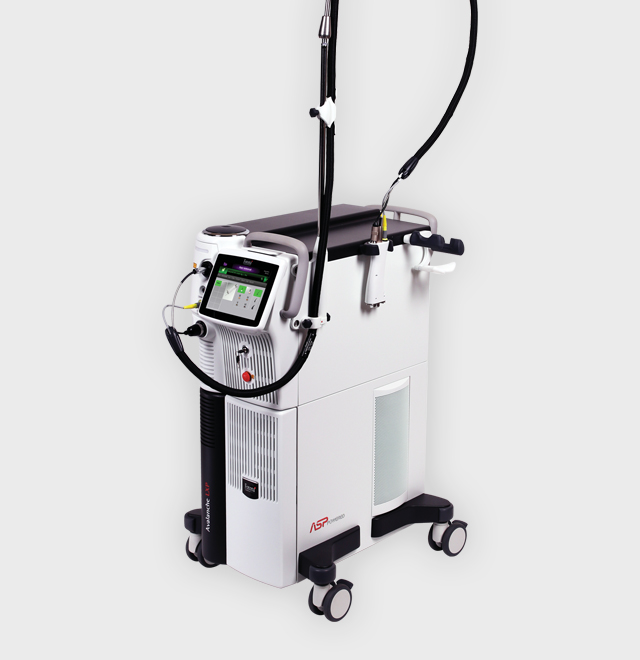
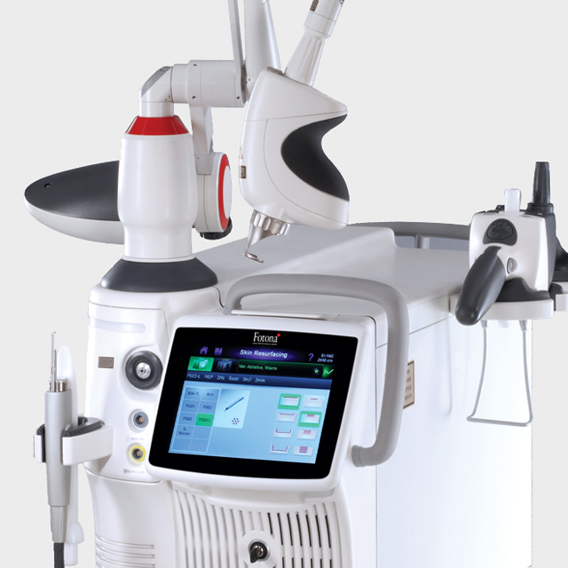
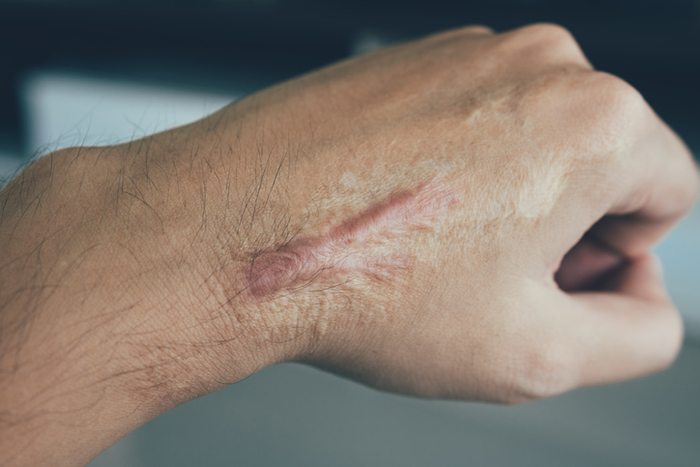
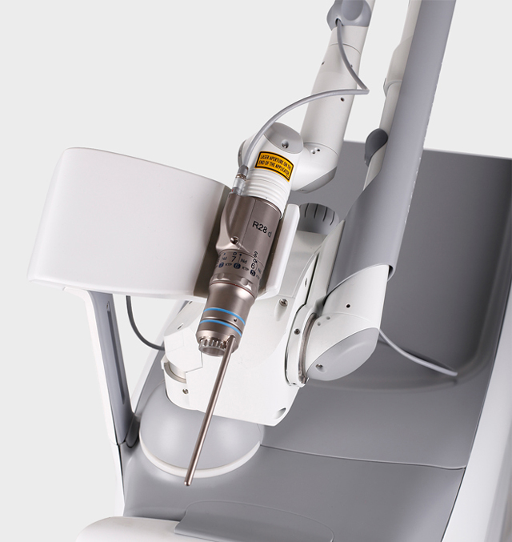
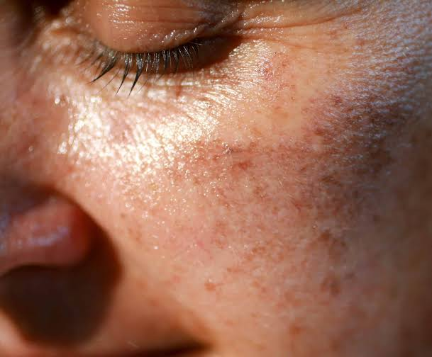
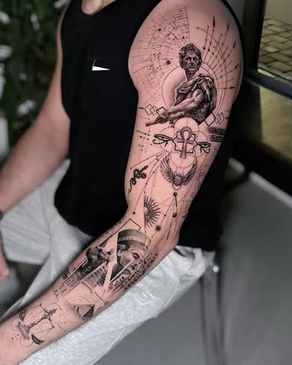

Alexandrite
알렉산드라이트 파장
Dual wavelength laser system
두 가지 파장을 하나의 시스템으로.
시술 환경에 유연함을 더하는 레이저 솔루션.
755nm 알렉산드라이트와 1064nm Nd:YAG 파장을 결합해 다양한 피부·모발 조건에 대응하도록 설계된 시스템입니다.

At a glance
알렉산드라이트 파장
엔디야그 파장
비접촉 냉각 기술
Technology
제품을 이해하는 데 필요한 주요 기술을 간결하게 살펴봅니다.
755nm와 1064nm 두 파장을 하나의 시스템에서 선택해 사용할 수 있습니다.
핸드피스와 스캐너에 냉각 기능을 통합해 공기와 물을 이용한 비접촉 냉각을 지원합니다.
낮은 에너지의 펄스를 연속적으로 전달하는 멀티패스 방식으로 제모 시술에 활용됩니다.
Key information
Applications
제품의 대표적인 활용 분야를 확인해 보세요.
두 파장을 활용하는 제모 솔루션
Multi-application laser system
다양한 레이저 기술을 하나의 플랫폼에.
폭넓은 시술 접근을 지원합니다.
Er:YAG와 Nd:YAG 레이저를 기반으로 다양한 피부 시술과 표면 개선 접근을 지원하는 다목적 레이저 시스템입니다.

At a glance
피부 표면 중심의 레이저
다양한 깊이의 에너지 전달
펄스 제어 기술
Technology
제품을 이해하는 데 필요한 주요 기술을 간결하게 살펴봅니다.
Er:YAG와 Nd:YAG 레이저를 한 시스템에서 활용합니다.
펄스의 시간적 특성을 조절해 다양한 시술 모드를 구성할 수 있습니다.
서로 다른 전달 방식으로 피부 표면 및 조직에 접근하는 기술입니다.
Key information
Applications
제품의 대표적인 활용 분야를 확인해 보세요.
피부 표면과 질감 개선을 위한 레이저 접근

다양한 피부 상태에 맞춘 시술 활용
Q-switched laser system
정교한 펄스 제어와 다양한 파장.
폭넓은 색소 시술 접근을 지원합니다.
여러 파장과 펄스 모드를 기반으로 색소 및 문신 관련 시술 등에 활용할 수 있는 Q-switched 레이저 시스템입니다.

At a glance
네 가지 파장 구성
다양한 레이저 모달리티
고출력 펄스 옵션
Technology
제품을 이해하는 데 필요한 주요 기술을 간결하게 살펴봅니다.
분획 방식의 에너지 전달을 통해 피부에 미세한 레이저 조사 영역을 형성하는 기술입니다.
펄스의 형태와 에너지 전달을 제어하는 다양한 모드를 제공합니다.
시술 목적과 파장에 맞춰 선택할 수 있는 핸드피스 옵션입니다.
Key information
Applications
제품의 대표적인 활용 분야를 확인해 보세요.

색소 관련 시술에 활용

문신 색소를 대상으로 한 레이저 시술
Experience Fotona
제품 상담 및 데모 예약을 통해 자세한 내용을 확인할 수 있습니다.